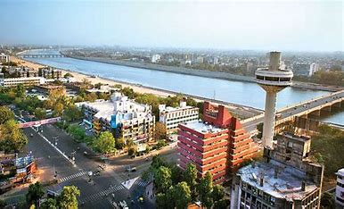

Welcome To Ahmedabad...

Textile City
Ahmedabad is the most populous city in the Indian state of Gujarat. It is the administrative headquarters of the Ahmedabad district and the seat of the Gujarat High Court. Ahmedabad's population of 5,570,585 (per the 2011 population census) makes it the fifth-most populous city in India, and the encompassing urban agglomeration population estimated at 6,357,693 is the seventh-most populous in India. Ahmedabad is located near the banks of the Sabarmati River 25 km (16 mi) from the capital of Gujarat, Gandhinagar, also known as its twin city.
Ahmedabad has emerged as an important economic and industrial hub in India. It is the second-largest producer of cotton in India, due to which it was known as the 'Manchester of India' along with Kanpur. Ahmedabad's stock exchange (before it was shut down in 2018) was the country's second oldest. Cricket is a popular sport in Ahmedabad; a newly built stadium, called Narendra Modi Stadium, at Motera can accommodate 132,000 spectators, making it the largest stadium in the world. The world-class Sardar Vallabhbhai Patel Sports Enclave is currently under construction and once complete, it will be one of the biggest sports centers (Sports City) in India. The effects of the liberalisation of the Indian economy have energised the city's economy towards tertiary sector activities such as commerce, communication and construction. Ahmedabad's increasing population has resulted in an increase in the construction and housing industries, resulting in the development of skyscrapers.
Famous Places in Ahemdabad City
- Sabarmati Ashram
- Vastrapur Lake
- Bhadra Fort
- Jama Masjid
- Kankaria Lake
- Rani no Hajiro
- Amdavad ni Gufa
Ahemdabad City Famous Food Item
- Khakhra
- Samosa Pav
- Dal Vada
- Fafda Jalebi
- Dhokla
- Naylon Khaman
- Paani Puri
- Bhuna Gosht
- Rasawala Khaman Dokla
- Stuffed Paratha
© Copyright Reserved
Go To Main Page